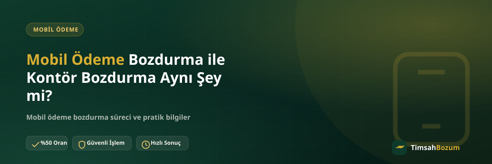

WhatsApp hattımıza "kontörümü bozdurabilir miyim" diye yazan kullanıcı sayısı hiç az değil. Bu soru genelde mobil ödeme bozdurma hizmetini duymuş ama hattındaki hangi bakiyenin bu kapsamda olduğunu netleştirememiş kişilerden geliyor. Aslında ortada "kontör bozdurma" diye ayrı bir hizmet yok; karışıklık iki farklı bakiye türünün aynı hat üzerinde görünmesinden kaynaklanıyor.
Mobil Ödeme Bozdurma ile Kontör Bozdurma Neden Karıştırılıyor?
İkisi de operatör üzerinden yürüyen, aynı telefon numarasına bağlı tutarlar olduğu için tek bir "bakiye" gibi algılanıyor. Oysa kontör, hattın kendi iletişim hizmetleri için tanımladığı bir kullanım hakkı; mobil ödeme bakiyesi ise dijital içerik ve hizmet alışverişlerinden doğan, faturaya yansıyan ayrı bir tutar. Bu ayrımı bilmeyen bir kullanıcı, "hattımda param var, bunu bozdurun" diyerek her ikisini de aynı kefeye koyabiliyor.
Kontör Bozdurma Diye Bir Hizmet Var mı?
Hayır. TimsahBozum'un sunduğu hizmet mobil ödeme bakiyesi bozdurmadır; kontör bakiyesi bu kapsamın tamamen dışında kalır. Kontör, operatörün kendi bünyesinde tuttuğu ve yalnızca arama, SMS veya bazı paket kullanımlarında harcanabilen bir haktır; nakde çevrilecek bir yapıda tasarlanmamıştır. Bu yüzden piyasada "kontör bozdurma" adıyla karşına çıkan bir teklif görürsen, bunun gerçek bir hizmet değil, muhtemelen bir dolandırıcılık girişimi olduğunu unutma.
Mobil Ödeme Bozdurma Nasıl Çalışır?
Mobil ödeme bozdurma, hattına tanımlı dijital ödeme limitinden doğan bakiyeni nakde çevirme sürecidir. Güncel bakiyeni gösteren bir ekran görüntüsünü WhatsApp hattımızdan paylaşırsın, oranı teyit edersin, onay sonrası ödeme WhatsApp üzerinden görüşülen yöntemle yapılır. Süreç boyunca üyelik, form doldurma veya kimlik belgesi istenmez; tek gereken doğru bakiyeyi doğru bilgiyle paylaşmak.
İki Bakiyeyi Hattında Nasıl Ayırt Edersin?
Operatör uygulaman veya hat sorgulama menün genellikle bu iki tutarı ayrı başlıklar altında gösterir. Kontör kalemi konuşma/SMS/paket kullanımıyla ilişkiliyken, mobil ödeme veya "dijital hizmet limiti" gibi adlandırılan kalem bozdurmaya konu olan tutardır. Fatura detayında da mobil ödeme harcamaları ayrı bir satır olarak listelenir. Hangisinin bozdurulabilir olduğundan emin değilsen, ekran görüntüsünü WhatsApp'tan paylaşman en hızlı netleştirme yöntemi.
Yanlış Bakiyeyi Paylaşırsan Ne Olur?
Kontör bakiyeni bozdurma talebiyle paylaşman işlemi iptal etmez ama gereksiz bir tur kaybettirir; hangi tutarın bozdurulabilir olduğu açıklanır ve doğru bilgi istenir. Bu yüzden mesajını yazmadan önce paylaşacağın ekran görüntüsünün mobil ödeme bakiyesini gösterdiğinden emin olmak, süreci ilk mesajdan itibaren hızlandırır.
Operatörüne Göre Değişen Bir Durum mu?
Hayır, kontör ile mobil ödeme bakiyesi arasındaki bu ayrım Vodafone, Türk Telekom ve Turkcell için aynı mantıkla geçerli. Hangi operatörde olursan ol, bozdurulabilecek tutar her zaman mobil ödeme/dijital hizmet limitinden doğan bakiyedir; kontör bu kapsamın dışındadır. Mobil ödeme bozdurma hizmetimiz operatör bağımsız aynı süreçle işler; güncel oranı işlem öncesi WhatsApp'tan teyit etmen yeterli.
Kontör Bakiyem Düşükse Mobil Ödeme Bakiyem de Düşük mü Sayılır?
Hayır, bu ikisi birbirinden tamamen bağımsız işler. Kontör bakiyen sıfıra düşmüş olsa bile hattına tanımlı mobil ödeme limitinden doğan bakiyen dolu olabilir; tam tersi de mümkün. Biri hattın ön ödemeli iletişim hakkını, diğeri dijital hizmet alışverişlerinden doğan sonradan faturalanan tutarı temsil ettiği için aralarında doğrudan bir bağ yok. Bu yanlış varsayım yüzünden bazı kullanıcılar mobil ödeme bakiyesi olduğu halde "kontörüm yok, param da yok" diye düşünüp bozdurma fırsatını değerlendirmiyor.
Bu Ayrımı Bilmek Neden İşine Yarar?
Hattındaki hangi tutarın hangi amaçla oluştuğunu bilmek, sadece bozum sürecini hızlandırmakla kalmaz; faturana neyin yansıyıp neyin yansımadığını da anlamanı sağlar. Örneğin bir oyun içi satın alma yaptığında bu tutar mobil ödeme bakiyesine işler ve faturana ayrı bir kalem olarak yansır; kontör harcaman ise ayrı bir kalemde görünür. İkisini karıştırmadan takip etmek, hem bütçeni planlarken hem de bozdurulabilir bir bakiyen olup olmadığını fark etmende işine yarar.
Bu Karışıklık Dolandırıcılığa Nasıl Zemin Hazırlıyor?
"Kontör bozdurma" gibi gerçekte var olmayan bir hizmet adı, bazı kötü niyetli kişiler tarafından tuzak olarak kullanılabiliyor. Böyle bir isimle sana ulaşan, resmi WhatsApp hattımız dışında bir numaradan işlem teklif eden ya da SMS doğrulama kodu isteyen her teklif dolandırıcılık şüphesi taşır. Bu yüzden hangi hizmeti aradığından emin olmak sadece süreci hızlandırmakla kalmaz, seni de riskli tekliflerden korur. İşlemini her zaman sitede yayınlanan resmi numara olan +90 543 887 21 71 üzerinden yürütmen en güvenli yol.
WhatsApp'a Yazmadan Önce Neyi Kontrol Etmelisin?
Mesajını göndermeden önce iki dakikanı ayırıp hattındaki tutarın gerçekten mobil ödeme bakiyesi olduğunu görmen, süreci baştan sağlama alır. Operatör uygulamanı aç, bakiyeni gösteren ekranı bul ve kalemin "mobil ödeme", "dijital hizmet limiti" ya da benzer bir başlık altında listelendiğini teyit et. Eğer gördüğün tutar "kontör" veya "konuşma/SMS paketi" başlığı altındaysa, bu tutar bozum kapsamının dışında kalıyor demektir ve bu durumu baştan bilmek seni gereksiz bir mesaj trafiğinden kurtarır.
Özetle Ne Bozdurulabilir?
Kısacası "kontör bozdurma" diye bağımsız bir hizmet yok, bozdurulabilen şey hattına tanımlı mobil ödeme bakiyesi. Bu iki kavramı karıştırmadan önce hangi tutarı elinde tuttuğunu netleştirmek, hem senin zamanını hem işlemi yürüten hattın zamanını korur. Bakiyeni doğru tespit ettikten sonra WhatsApp hattımızdan yazarak güncel oranı öğrenebilir, işlemini başlatabilirsin.
İlgili Yazılar
- Mobil Ödeme Bakiyesi ile Kontör Bakiyesi Karıştırılır mı?
- Mobil Ödeme Bozdurma Yasal mı? Merak Edilenler ve Gerçekler
- En Güvenilir Mobil Ödeme Bozdurma Sitesi Nasıl Seçilir?